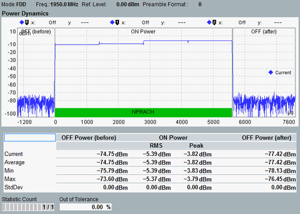

This single-preamble view shows a diagram and a statistical overview of related power results.

The diagram shows the UE output power vs. time, sampled with 96 Ts (3.125 µs). The trace covers the range from -1200 µs to +7596.875 µs relative to the start of the preamble.
In the example screenshot, you can distinguish the four symbol groups. The first two symbol groups use subcarriers near the edge of the bandwidth. The last two symbol groups use subcarriers near the center of the bandwidth. At the edge of the bandwidth, the power is slightly lower than in the center.
The table below the diagram shows ON power and OFF power values. According to 3GPP, the ON power is the mean UE output power over the preamble, i.e. over the NPRACH measurement period, see Table "Measurement period for ON power". In addition to this value, the result table lists also the peak power within the measurement period. The ON power measurement period is marked by a green horizontal bar in the diagram.
The OFF power is the mean power during 1 ms before and after the ON power measurement period. A transient period of 20 µs next to the ON power measurement period is excluded. The transient period is indicated by gray vertical bars in the diagram.
For additional information, refer to "Common View Elements".